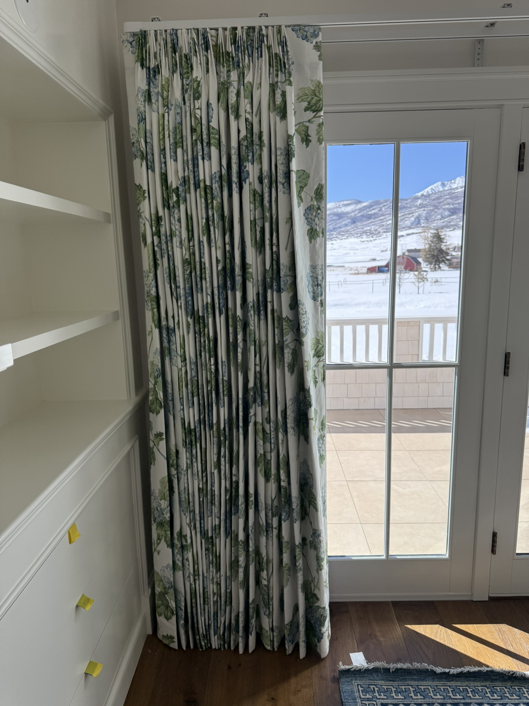

Custom drapery requires four key measurements: rod placement, rod width, return depth, and finished length. This guide walks through each one with examples.
Where you mount the rod changes how tall and wide the window appears. The standard approach is to hang high and wide — closer to the ceiling and extending well beyond the window casing. This makes any window look larger and more elegant.
Mount the rod 4 to 6 inches above the window trim (or all the way to the ceiling if within 12 inches), and extend 4 to 8 inches beyond the casing on each side. This frames the window with light, maximizes apparent ceiling height, and allows panels to stack clear of the glass when open.
Every drapery order includes a free in-home visit. We mark bracket positions, verify wall structure for anchoring, and install your hardware and panels.
Panel width determines how much fabric you have per panel, and how far the panels stack back from the window when open. Too narrow and the window feels pinched. The right width frames the window without overwhelming it.
Panels need fullness to look right. At minimum, total fabric width should be 1.5× the rod width. Pinch pleat and goblet styles typically use 2× to 2.5× fullness. Ripple fold and eyelet styles work at 1.5× to 2×. Ordering panels at exactly rod width will look flat and sparse.
| Pleat / Heading Style | Typical Fullness | Notes |
|---|---|---|
| Pinch Pleat (3-finger) | 2× – 2.5× | Classic, formal look. Most common for custom drapery. |
| Euro Pleat (2-finger) | 2× | Cleaner, slightly more modern than traditional pinch pleat. |
| Box Pleat | 2.5× – 3× | Formal, architectural. Uses the most fabric. |
| Goblet Pleat | 2× – 2.5× | Decorative cup at top. Formal rooms, tall ceilings. |
| Ripple Fold | 1.8× – 2× | Consistent S-curve waves. Modern, clean. Pairs with glide rings. |
| Eyelet / Grommet | 1.5× – 2× | Modern look. Works best with medium-weight fabrics. |
| Rod Pocket | 1.5× – 2× | Gathered onto rod. Stationary or occasional use — harder to open. |
Sarah can walk you through fabric options and pleat styles during the design consultation. We'll bring samples and calculate everything on the spot.
Finished length is measured from the top of the ring or hook (not from the rod itself) down to where you want the panel to end. The right length depends on the look you want and the practicality of your space.
When using rings, the panel hangs below the ring — not from the rod itself. If your rings are 1-1/2” tall, your panel starts 1-1/2” below the rod center. Measure from the bottom of the ring to the floor to get your finished panel length. We confirm this during measuring.
Our recommendation: floor length at 1/2” float is the most universally flattering option. It reads as intentional and clean from any angle, doesn't collect dust, and works well with every fabric weight and pleat style.
Length is the hardest dimension to get right on your own. We always verify from the actual installed ring position during the in-home visit, not from the floor plan.
Fullness is the ratio of fabric width to finished panel width. The higher the fullness, the more luxurious and voluminous the panel looks. Different pleat styles require different fullness ratios and create very different silhouettes.
Not sure which style fits your room? Pinch pleat is almost always the safest choice — it works in every room type, holds its shape over time, and photographs well. Ripple fold is the best choice if you want a very clean, modern look and are open to a dedicated track system instead of a decorative rod.
Not sure on fabric, fullness, pleat, or length? Sarah will walk you through every option with samples in hand. Nothing is finalized until you're confident it's right.